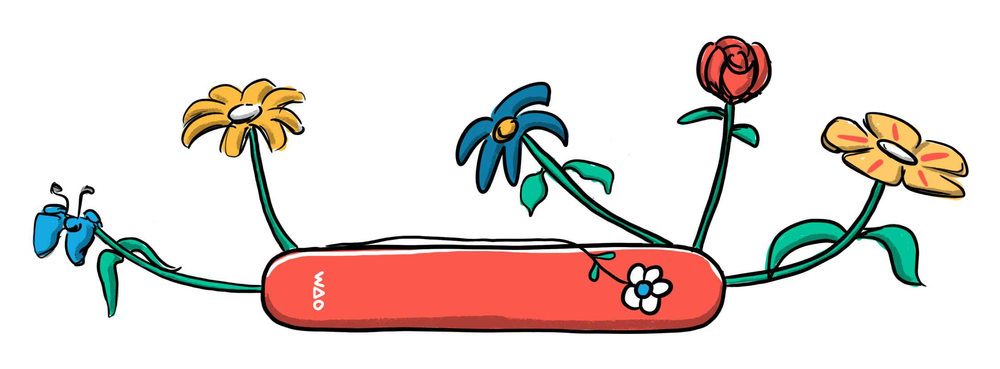
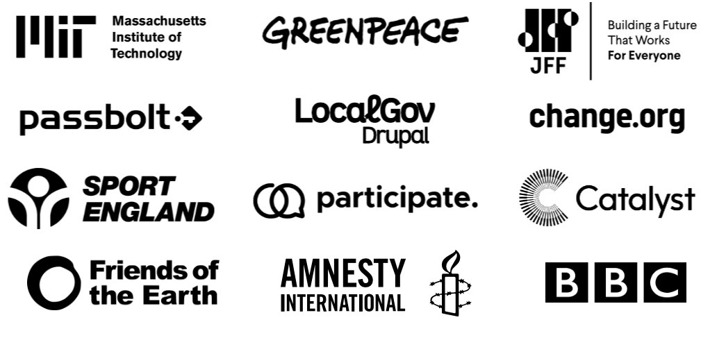

About Us

We didn't just think outside the box; we shredded it (and then recycled it, obviously). Our services included consultancy, workshops and training, project and product management, research and development, community building, and everything in between.
Based in the UK and Germany, we believed in making things better, together. We thrived on working with purpose-driven organisations that valued environmental sustainability, social responsibility, equality, and human rights. We had a lot of wonderful clients including:

We Are Open Co-op closed on 1 May 2026, but our work and resources continue to be available for future reference and inspiration.
Read our final blog post
Our Work
We partnered with plenty of companies, charities, and non-profits — some of which can be found below. We served as critical friends, fractional leaders, innovators, storytellers and community builders. We worked at the intersections of Learning, Technology and Community.
Amnesty International UK
From 2024 until 2026 we worked with Amnesty International UK building community strategy and platform for their activists. Our research, strategies and insights led us to recommend the well known, open source platform Discourse to power their online activist community. We piloted the technology in Q1 of 2026.
Read more
BBC R&D
We worked with the BBC's Responsible Innovation Centre for Public Media Futures to synthesise existing research on AI literacy, understand the nuances of public media's educational role, and create a robust, future-proof framework around the concept of literacies.
Read more
Greenpeace International
We spent more than three years working closely with Greenpeace International on several projects, including a robust internal learning programme. We built learning experiences and developed digital strategies that supported their mission and organisational goals.
Read more
Digital Credentials Consortium
We helped the Digital Credentials Consortium create pathways in and around their technologies, working to advance the field of verifiable credentials and digital learning achievements.
Read more
Friends of the Earth
We researched, studied and documented the environmental impact and social narrative surrounding generative AI to help Friends of the Earth create a policy position paper. Our research, Harnessing AI for environmental justice, continues to be referenced and lauded as a great reflection on the complexity of technology and its impact on the environment.
Read more
Other Clients
We worked with a wide variety of clients over our tens years as a digital service cooperative. We couldn't summarise and archive them all, but you can find even more in our GitHub repo.
See more of our clients